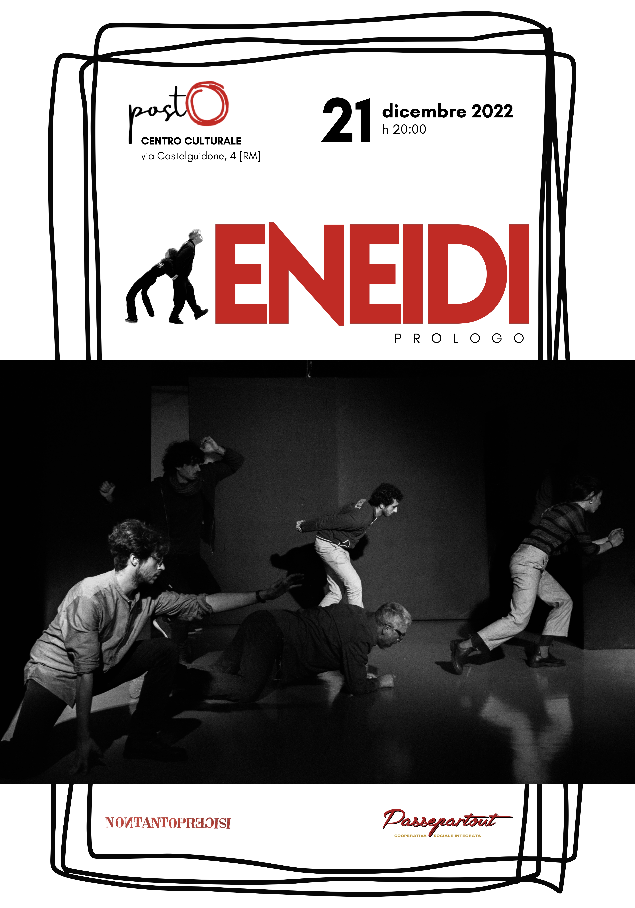

La scena di Eneidi è aperta dall’azione fisica degli attori: un lavoro di composizione di spazi, tempi e corpi che dà vita ad un dialogo visuale che compone figure e suscita immagini in grado di evocare vicende, di narrare storie. Eneidi è anche la rotta di un percorso verso luoghi e persone, un cammino che migra, per aprire strade non ancora tracciate lungo le quali incontrarsi e costruire nuova comunità: un corpo collettivo capace di superare categorie e discriminazioni. Il lavoro di scena mutuerà dall’Eneide la forma nomadica, articolandosi come percorso ad episodi, tanto in teatro che come intervento site specific. L’Eneide è la forma espressiva di un movimento: la trasformazione dei corpi, le contrazioni muscolari e gli orizzonti riflessi. Non la meta ma il viaggio, il procedere; gli approdi temporanei, le impronte lasciate e le tracce, gli indizi necessari a suggerire il cammino. Enea oggi ci parla. La storia di ognuno è quella di Enea. Ognuno è Enea. Enea si muove a ritroso, per fondare una città già fondata, però muove dall'abbandono di un'altra città. Scacciato dai lidi e dalle mura che lo avevano ospitato, raccoglie i suoi e si muove, prende il vento, e trasforma la sua stanzialità in un provvisorio nomadismo. Certo Enea vuole una meta, una fondazione, porre fine ai suoi infiniti sconfinamenti. Ma la fondazione è la stasi e la stasi è un’illusione. Lavorare sulla stasi, sull’immobilità significa mostrare l’inevitabile movimento del corpo e dell’organismo. La messa in scena è questa trazione tra l’illusione di potersi fermare e la necessità del movimento. La scena è il tentativo, destinato sempre a fallire ma sempre reiterato, di mostrare il processo senza contenuto.
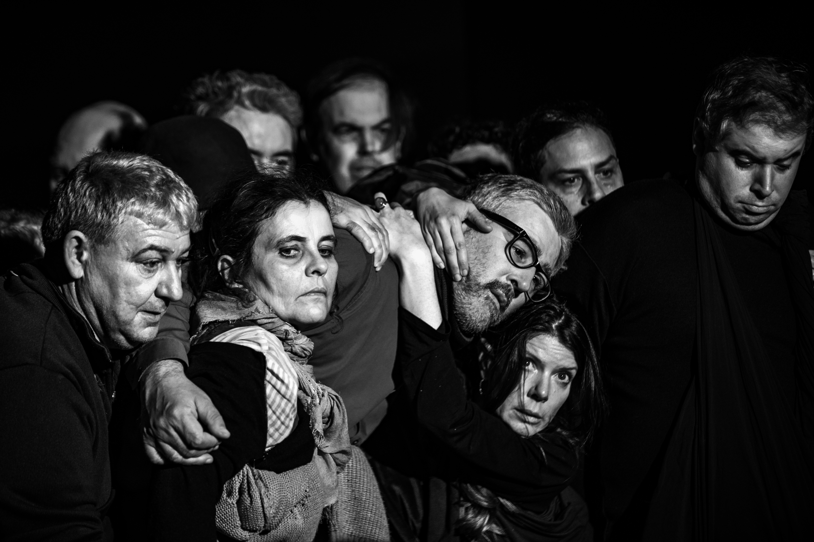
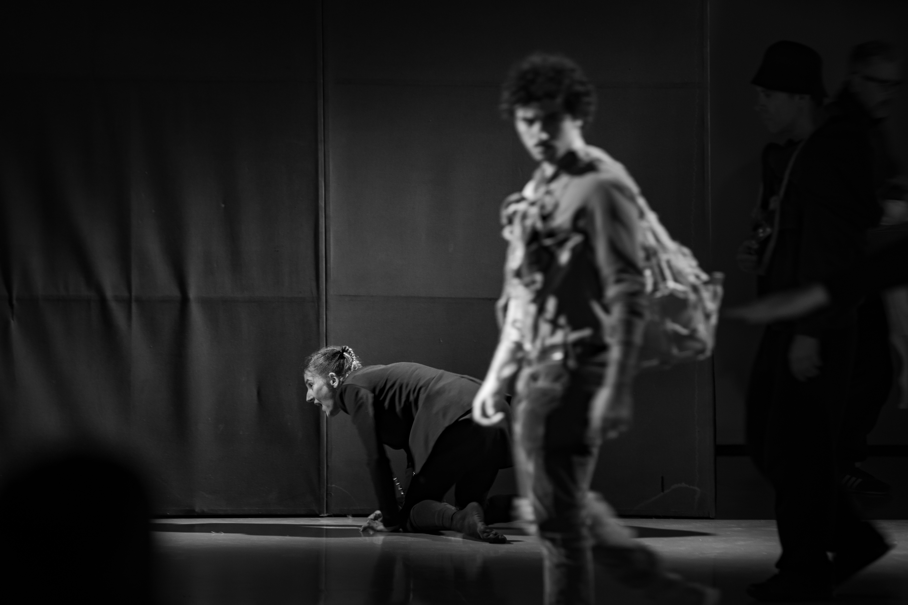
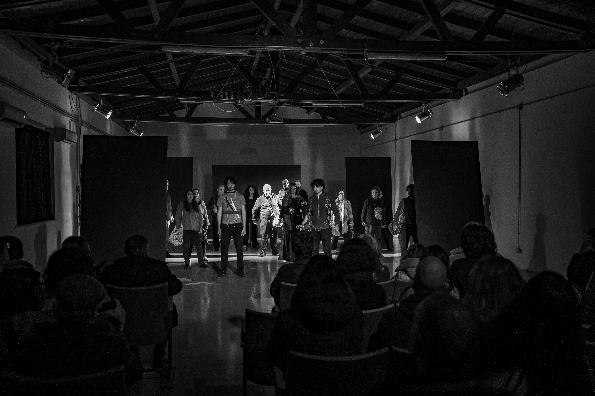
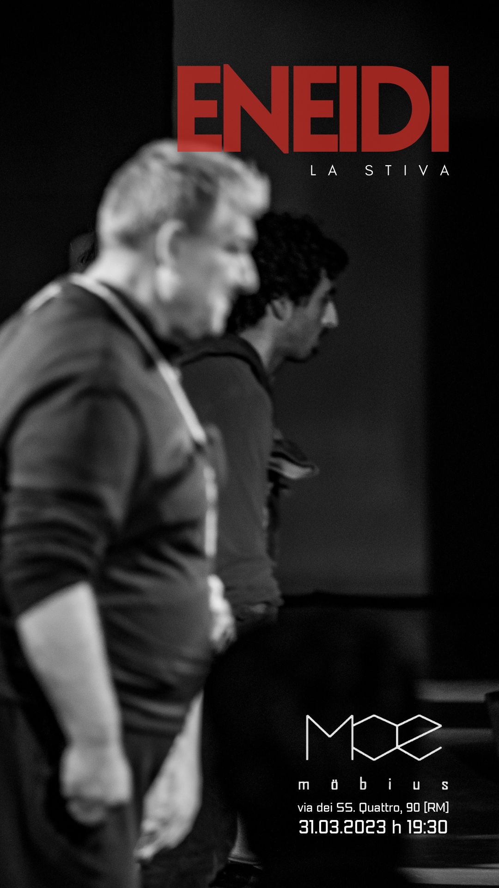
Enea si muove a ritroso, per fondare una città già fondata, per dare un ethos ad una città già adulta; una città che deve cantare la sua magnificenza e che vuole ancorarsi ad essa. Enea si muove a confermare e a conservare l’esistente. Una sorta di veglia del già dato. Però. Però muove dall’abbandono di un’altra città, scacciato dai lidi e dalle mura che lo avevano ospitato. Raccoglie i suoi e si muove. Parte, si sposta. Si muove, prende il vento e trasforma la sua stanzialità in un provvisorio nomadismo. Certo Enea vuole una meta, vuole porre fine ai suoi infiniti sconfinamenti e noi non siamo qui ad accoglierlo come il campione dell’ethos, piuttosto ci può condurre al movimento, alla variazione continua di confini. Eneidi è la rotta di un percorso verso luoghi e persone, un cammino che migra, per aprire strade non ancora tracciate lungo le quali incontrarsi e costruire nuova comunità: un corpo collettivo capace di superare categorie e discriminazioni. Un gruppo nutrito di attori, tutti parimenti viaggiatori senz’alcuno in testa, si muoverà per le stanze e i corridoi della galleria. Arriveranno, arriveranno dall’esterno, dopo aver mappato strade e cortili. Arriveranno, tutti quanti, insieme e si stiperanno come in una STIVA, tra le cose e le persone, tra gli spettatori e i visitatori, provando a fare un corpo unico. Un gruppo, una selva di gambe, teste, fiati. Corpi che si aggrappano e si sostengono e si allontanano e si ripigliano. Presi, in una STIVA. E si muovono, e viaggiano.
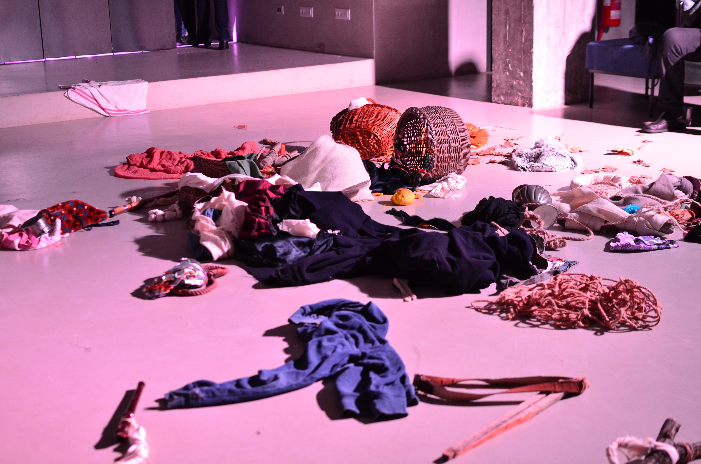
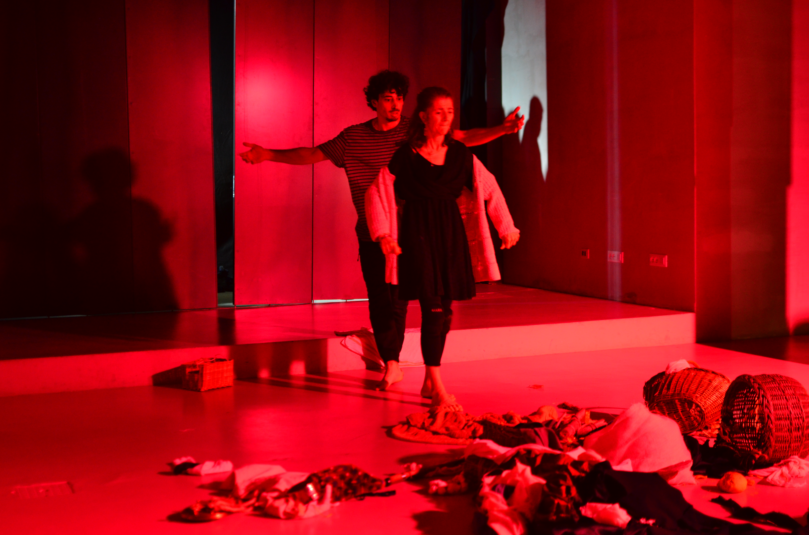
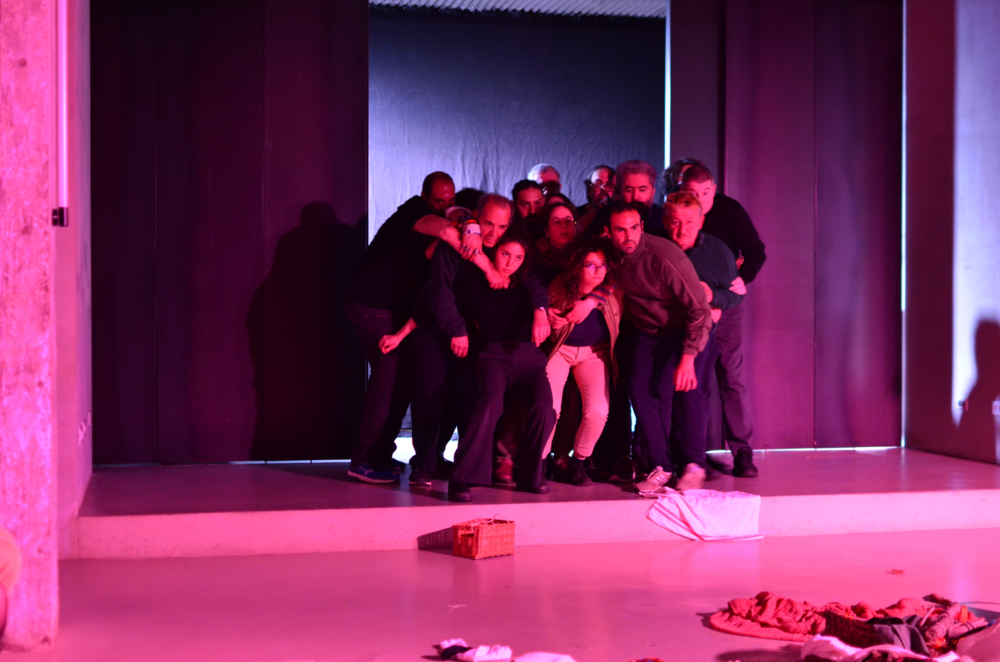
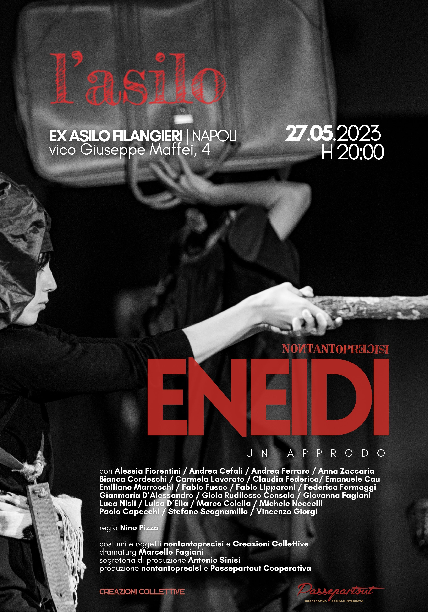
Eneidi è un viaggio che giunge all’Asilo-Ex Asilo Filangieri di Napoli con la terza tappa del suo progetto. È un approdo che può sintetizzarsi proprio attraverso la stessa definizione che il dizionario dà a questo termine: operazione, manovra di toccare la riva; in senso più metaforico, esito positivo di un’azione. Ma anche, come sostantivo puntiforme, località litoranea, anche di fortuna, che consenta di giungere a riva, dove si può approdare. Il nostro è un approdo che apre lo spazio dell’incontro, dove la conoscenza reciproca si svolge attraverso le fasi di un racconto per immagini. L’azione, prettamente fisica, è aperta dal lavoro corporeo degli attori che, in un gioco di prospettive, dà alla scena forte visualità narrativa. Il corpo, l’articolazione dello spazio, lo svolgersi dei tempi disegnano una drammaturgia fisica dove anche la parola è vissuta più nel gesto sonoro che nella sua lettera. Il lavoro comune del gruppo produce una tensione narrativa che, in continuo dialogo corporeo, sollecita lo spettatore non a cercare soluzioni di senso, quanto invece a costruire la propria visione in forma di condivisione e contributo al lavoro. È un movimento di avvicinamento reciproco mai concluso, una ricerca continua di uno spazio comune mai definitivamente edificato, dove il quotidiano non è abitudine al noto, alla consuetudine, ma si svolge nel confronto continuo con l’ineffabile scorrere della vita. È quasi una geografia umana in continua trasformazione, mai uguale a sé stessa, mai facilmente riconoscibile, che emerge dallo studio e sperimentazione continua delle dinamiche e dei processi della relazione. Si intreccia una trama dove il tessuto è il corpo vivo di persone, donne e uomini in costante movimento, confusi nello sfumare continuo tra chi sta e chi arriva, tra chi va e chi rimane. Qui accoglienza e ospitalità si apparentano nel gesto del mostrarsi, del darsi a vedere. Si sta sulla riva, sul margine, come su una soglia comune dove si confondono reciprocamente il luogo e le forme dello scambio, del dare e del prendere, del donare e del ricevere, dove non è più identificabile chi è di qua e chi di là, chi dà e chi prende. Che si giunga in fuga da luoghi di disperazione o di violenza, per scambiare conoscenza, per costruire un cambiamento o soltanto per provare sé stessi, è sempre il movimento che muove, che anima e ci vive, che spinge e guida i corpi verso una comune condizione di profugo divino. Questa è la scena, un approdo, questa terra comune che sorge appena il piede poggia, i volti si mostrano, le mani si tendono. È questo stare accanto e di fronte per avere sempre una nuova possibilità, per fabbricare futuro.
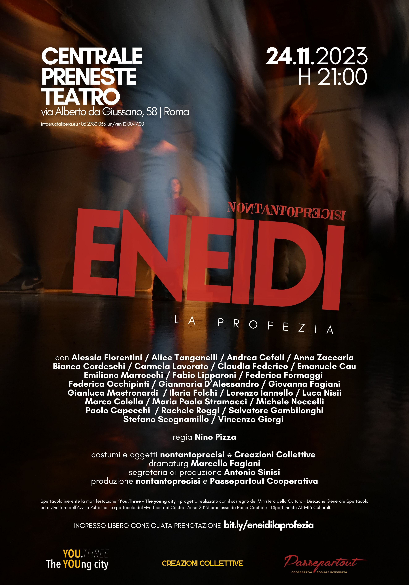
Gli Enea continuano a disegnare una geografia umana in perenne trasformazione disegnando una terra comune. La scena che calpestano sorge al loro gesto e mostra la profezia del sacro che ci dice del movimento. L’impossibile da evadere.
Profezia. Pre-dire attraverso i gesti, le posture. Ciò che si dice chiama alla direzione dello sguardo, del cammino che si deve intraprendere, dell'orizzonte che si può abitare. Enea è questi corpi, corpi di donne, di uomini, di voci, di silenzi e di cose, che si muovono e che si avvinghiano; transitano da uno spazio ad un oggetto, sono corpi che prendono in dote l'occasione della profezia. La scena di nontantoprecisi scaraventa questi Enea nel movimento immobile che articola i corpi. I corpi, questi Enea, sono percorsi dal moto indicato da una profezia. Si muovono, articolano le diverse e infinite parti dell'esistenza come un'esondazione. Il corpo tracima e si rende indistinguibile da altro. È un movimento di avvicinamento reciproco mai concluso, una ricerca continua di uno spazio comune mai definitivamente fondato, dove il quotidiano non è abitudine al noto, alla consuetudine, ma si svolge nel confronto continuo con l’ineffabile scorrere della vita. Enea muove e si muove verso una meta ma la meta di nontantoprecisi è il movimento stesso. La scena offre alla visione lo sfinimento di un movimento che, profeticamente, muove verso nessuna meta. Per questi e queste Enea infiniti-sfiniti, la profezia indica l'unico movimento possibile: il massimamente stante di ogni corpo. Destino.
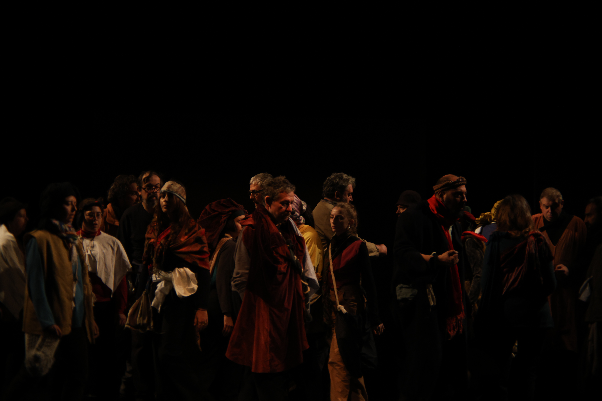
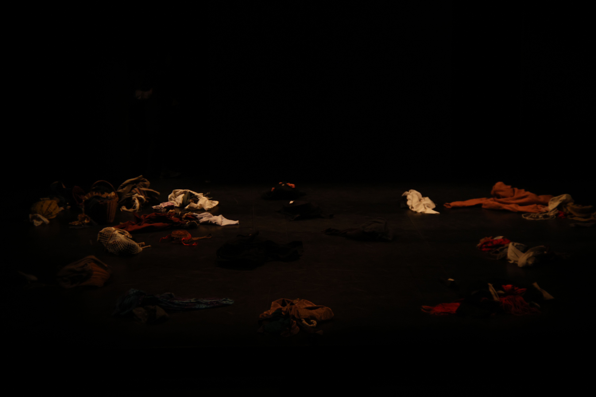
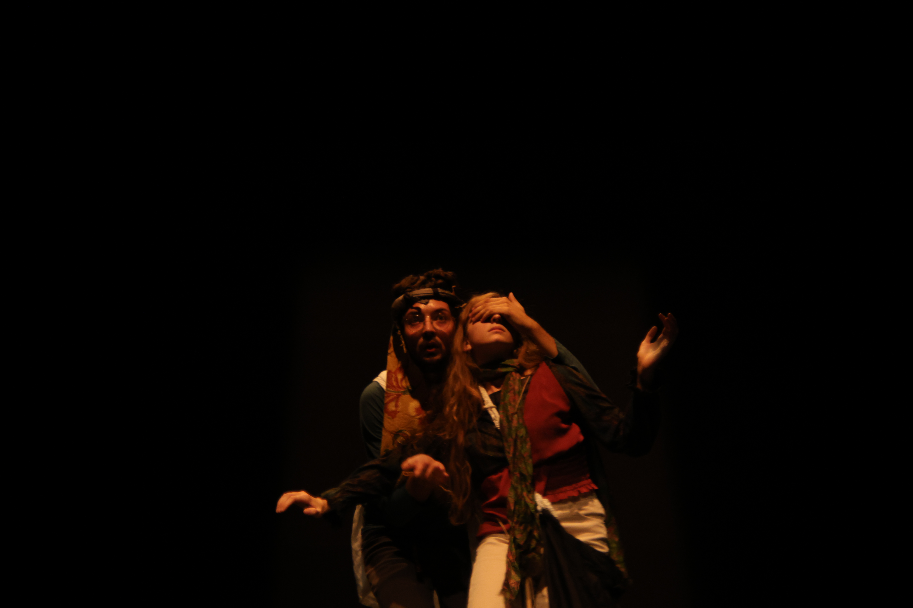
Crediti foto: XXXX
← Torna a SPETTACOLI